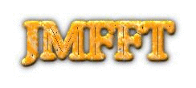

J.-M. Fast Fourier Transforms
Shortcuts
License terms
Utilisation
Manual
Copy of sources
Installation
Publication
Link to FFTW
Contact:
Pierre-François Lavallée (CNRS / IDRIS)
© CNRS - IDRIS, 20/11/2006